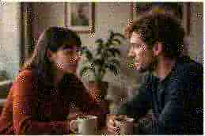

ÖNISMERET
A szorongás nem mindig látványos
A szorongás sok arca van. Van, amikor csendes, mindennapi szokásainkban rejtőzik, észrevétlenül formálja a napjainkat.
Nem mindig a nagy válaszok hiányoznak.
Néha csak arra van szükségünk,
hogy végre jól kérdezzünk.
A szorongás sok arca van. Van, amikor csendes, mindennapi szokásainkban rejtőzik, észrevétlenül formálja a napjainkat.

Nemcsak a génjeinket, hanem a kimondatlan történeteinket is továbbadjuk. De van, amit tudatosan másként is lehet.

Hogyan ismerjük fel a kapcsolatunkban a fáradtság jeleit, és mit kezdhetünk vele? Közelség, őszinteség, újrakezdés.
Önelfogadás nem egyenlő azzal, hogy mindent rendben találunk. Sokkal inkább egy kapcsolati viszony, amit önmagunkkal, a türelmünkből és kíváncsiságunkból építünk.
ELŐOLVASÁS →
Mi történik velünk, ha nem pihenünk eleget? És hogyan lehet ezt jól csinálni?

Nem a munka a probléma, hanem az, ahogyan viszonyulunk hozzá.
Amikor újra kell értelmeznünk, ami igazán fontos.
A hála nem megoldás mindenre, de sok mindent megváltoztat.